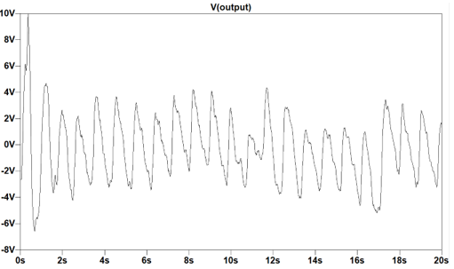

Analog Signal Processing: Pulse Oximetry
Project Focus: Reducing noise in pulse oximetry signals to improve SpO₂ measurement accuracy.
Fall 2024, Medical instrumentation
Project Overview
The goal of Pulse Oximetery was to develop a cost-effective, analog signal processing circuit that reduces noise in pulse oximeter signals while preserving critical physiological data. Starting from a basic pulse oximeter design using a red LED and a photoresistor to capture raw data, I focused on mitigating common noise sources—such as motion artifacts, ambient light, and electronic interference—without filtering out biologically significant changes.
To achieve this, I designed and simulated a second-order low-pass filter using inexpensive RC components and operational amplifiers in LTspice. This analog approach allowed for effective attenuation of high-frequency noise while maintaining the integrity of the low-frequency heartbeat. The iterative process—balancing performance with component cost—resulted in a circuit that reliably amplifies the desired signal within the constraints of a tight budget.
Ultimately, this project showcases my expertise in analog circuit design and biomedical signal processing, demonstrating how a carefully engineered analog filter can improve the accuracy of non-invasive blood oxygen monitoring.
Understanding the Noise Problem
- Motion Artifacts: Sudden hand movements can distort SpO₂ readings.
- Ambient Light Interference: External light sources can introduce unwanted variations in signal detection.
- Electronic Noise: Internal circuit noise can create fluctuations in sensor output.
These noise sources often lead to incorrect oxygen saturation readings, affecting the reliability of pulse oximeters.
Design
To combat noise, I employed hardware filtering combining passive and active circuits to refine pulse oximeter output.
Hardware-Based Passive Filtering
Implemented two low-pass RC filters forming a second order filter to attenuate high-frequency noise while preserving key pulse data.
Hardware-Based Active Amplification
Implemented two non-inverting operational amplifiers to increase signal strength from milivolts up to volts, and to maintain a max and min of +/- 10V.
Testing & Results
To validate the effectiveness of my filtering approach, I processed real and simulated pulse oximeter signals.
Key Findings:
- Filtered signals showed a clearer heart rate waveform with improved SpO₂ accuracy.
- FFT analysis demonstrated reduced high-frequency noise components.
The improvements were visualized through before-and-after plots, highlighting enhanced signal clarity.
Before Filtering
After Filtering
Conclusion
This project successfully demonstrated that noise filtration techniques can significantly enhance pulse oximeter accuracy. By applying a combination of hardware and digital signal processing methods, I improved signal quality, making SpO₂ measurements more reliable. Future iterations could integrate advanced filtering algorithms and machine learning models to further refine real-time noise reduction.